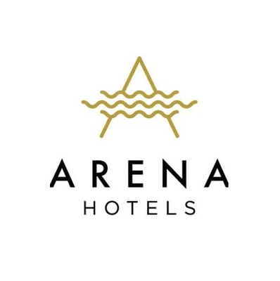

ExploringUnique MarketingIssues.
What entrepreneurs face now that generative AI answers the search.
Understanding Generative Engine Optimisation (GEO) through foundational marketing: STP, brand, the marketing mix, and closing the deal with the sales steps.
Meet Ruka Maldives
- Dhiffushi, North Malé Atoll · 12 rooms · opened 2025
- Cosy boutique, boho style, a personal island-villa feel
- Open-courtyard and indoor dining · serviced living
- Budget-friendly, and no website of its own
Four questions every new venture must answer:
Who are our customers, and how do we find them?
Segment the market, choose targets, state one clear position.
Canvas: Customer Segments + Value PropositionWhy us? How does a brand decide whether AI finds you?
A consistent brand earns trust despite the liability of newness.
Canvas: Value PropositionWhat do we offer, and how?
The 4Ps become 7Ps, because a guesthouse sells a service.
Canvas: Channels + Revenue StreamsClosing the deal: can selling be a repeatable system?
No one can guarantee a sale; the seven-step process makes it repeatable.
Canvas: Customer RelationshipsBe the traveller.
- 01Scan the code with your camera
- 02Pick a traveller: Couple, Solo, Family or Dive
- 03Tap Search and read the AI’s answer
- 04Watch the screen
Pause at the question: “Why do you think the AI left Ruka out?”
Who could stay?
Segmentation divides a market into groups of customers with similar needs.
Barringer & Ireland, Unique Marketing Issues- Demographic
- Age, income, life stage: honeymooners, young families
- Geographic
- Where guests come from: Europe, China, South Asia
- Psychographic
- Lifestyle and values: boho aesthetic versus luxury resort
- Behavioural
- Benefit sought: a budget stay versus diving every day
Couples & honeymooners
Romance, privacy and a special setting
Solo travellers
Quiet, safety and value for money
Small families
Space, easy meals and a budget that works
Divers
A dive centre on site and daily dive trips
Target where you can win
Choose the segments where a new venture has a real advantage; do not chase everyone.
- Couples & honeymooners
- Solo travellers
- Small families
- Divers: left outReveries Diving Village has a dive centre on site

Arena BeachRuka’s core position“A cosy boutique home-away-from-home on Dhiffushi”
A brand is a promise people, and AI, recognise
“A brand is the set of attributes, positive or negative, that people associate with a company.”
Barringer & Ireland, Unique Marketing IssuesSame name · same address · same phone
Every review and booking now counts for one brand, one entity an AI can recognise.
Through the AI lens: STP + brand together
Reads the intent
“cosy, budget, honeymoon”
= a segment: couples on a budget
Checks the facts
Same name, address, phone and facts across
Shortlists
The position it can verify and repeat
- The same facts appear everywhere
- Specific attributes replace adjectives
- Reviews echo the position
Couples: intimate boho style and courtyard dining
Solo: privacy and serviced living on a budget
Families: villa-style living, indoor and courtyard dining
The marketing mix in the generative era
Marketing 5.0: technology reshapes every P Kotler, Kartajaya & Setiawan (2021)
Product
GEOThe core benefit and features the guest buys.
Facts, not adjectives: 12 boho rooms, courtyard dining, breakfast included. AI repeats what it can check.
Price
GEOCost-based (costs plus margin) or value-based (what guests think it is worth).
Publish a range and terms, so AI can qualify the guest before it recommends.
Place
GEOSell direct or through intermediaries such as OTAs, which take commission.
AI assistants are the newest intermediary: keep every listing consistent.
Promotion
GEOAdvertising, PR, social media and reviews build awareness.
Structured content and reviews that AI can extract and summarise.
People
Hosts named and reviewed consistently.
Process
Clear booking and response steps an AI can describe.
Physical evidence
Real photos of the boho rooms and courtyard, the same on every listing.
AI opens doors; you close the sale
Prospect for leads
Find travellers looking for a Dhiffushi stay
Initial contact
The first answer to an enquiry
Qualify the lead
Budget, dates and fit confirmed
Sales presentation
Rooms, courtyard and breakfast shown
Meet objections
“Can you arrange a courtyard dinner for our anniversary?”
Close the sale
Deposit and confirmation
Follow-up
Reviews, repeat stays, referrals
Steps one to four: the AI finds, filters and presents for you. A guest who clicks through arrives pre-qualified.
Steps five to seven: objections, the close and the relationship still belong to the guesthouse.
If AI handles steps one to four, how does the guesthouse manager’s role change?
- 1Prospect
- 2Contact
- 3Qualify
- 4Present
- 5Objections
- 6Close
- 7Follow-up
- AI-assisted
- Human
Turn to your neighbour. Which touchpoints should stay human, and which can be automated?
01Administrative responder → experience architect. Why: AI now answers rates, dates and availability, so the manager’s value moves to steps 5–7: objections like the anniversary courtyard dinner, the close, and the stay itself.
02Passive marketer → data curator. Why: the AI only recommends what it can verify, so keeping name, facts, prices and photos identical everywhere becomes a daily job.
Reviews from great stays feed the next AI answer.
Now, make Ruka visible.
- BrandOne name, address and phone everywhere
- ProductFacts: boho style, courtyard dining, serviced living
- PriceA clear price range and terms, published
- PlaceBookable direct and on OTAs, details identical
Now tap Search again.
Traveller: a couple / honeymoon- 1Ruka Maldives
- 2Stone Hotels Dhiffushi
- 3Arena Beach Hotel
- Solo & family: Ruka moves up the list
- Dive: still not a fit; Reveries wins
Questions for discussion in class
Ruka targets three segments. Is that one position or three? Use Barringer & Ireland to argue.
STP · PositioningWhich of the 7Ps would you fix first for Ruka to be found by AI, and why?
Marketing mix · GEOWhich steps of the sales process should a guesthouse never hand to AI?
Seven-step salesYou are the marketing team
- 01Pick a guesthouse to audit
- 02Prompt like a general traveller seeking affordable accommodation in the Maldives
- 03Use three different AI assistants (e.g. ChatGPT, Gemini / Google AI Mode, DeepSeek)
- 04Record who is named and why; screenshot the top results to share
- 05Ask each AI: “Why didn’t you recommend [guesthouse]?” and “What needs fixing for you to recommend it?”
“Write a one-year marketing plan for a Maldivian guesthouse, with an executable timeline and budget.”
- AuditAI visibility + listings
- STP+ positioning map
- Business Model CanvasMap the venture
- 7Ps with GEOEach P, AI-ready
- 12-month timelineQuarterly milestones
- Budget planCost every action
- PitchPresent the plan
Ruka can be…
Consistent, verifiable facts that AI can repeat
A clear position, with proof points for couples, solo travellers and families
AI opens the door; people close the sale and retain the guest
Four lessons: STP chooses who · Brand earns trust · 7Ps make it verifiable · Sales steps close and retain
Graduates with employability skills
I came from industry. In marketing management roles I sat on the other side of the desk, interviewing graduates. The knowledge was there, but when a real question came there was no reference point, and minds went blank. So I teach students to meet that manager, and surprise them.
Real local cases
Maldivian firms like Ruka, not distant examples
Theory → application
Every concept ends in a decision for a real business
Practise the hard question
Rehearse the manager’s question until the answer comes
Theory and application are worth more to an employer than academia or experience alone.
References & sources
Thank you for your time. I appreciate your active participation.
- Aggarwal, P., et al. (2024). GEO: Generative engine optimization. Proceedings of the 30th ACM SIGKDD Conference on Knowledge Discovery and Data Mining.
- Barringer, B. R., & Ireland, R. D. Entrepreneurship: Successfully launching new ventures. Pearson. Unique marketing issues.
- Kotler, P., Kartajaya, H., & Setiawan, I. (2021). Marketing 5.0: Technology for humanity. Wiley.
- Morand, J.-C., & Schegg, R. (2026). Be visible to AI: The keys to semantic optimization and GEO for hotels [White paper]. HES-SO Valais-Wallis. https://doi.org/10.5281/zenodo.19109201
- Osterwalder, A., & Pigneur, Y. (2010). Business model generation. Wiley.
- Wirtz, J., & Lovelock, C. (2022). Services marketing: People, technology, strategy (9th ed.). World Scientific.
All businesses, logos and assets referenced are used for teaching purposes only, with permission. None of the concepts reflect on real business operations or criticise any business’s current operations or strategies. The positioning map is the lecturer’s illustrative perception and the “fractured footprint” is a teaching scenario. The slide-4 search and the phone demo are scripted simulations, not live AI; the real AI answers were captured on 4 November 2026.